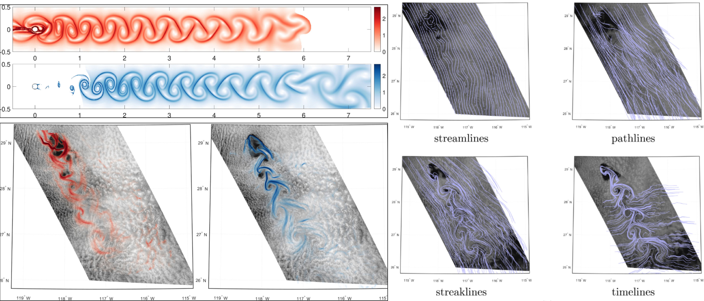

Kármán vortex street: The two-dimensional
alternating unsteady pattern of vortices that is commonly
observed behind circular cylinders in a flow (e.g., the vortex
street behind wires in the wind is responsible for the distinct
tone sometimes heard)

1 Günther, T., Horváth, Á., Bresky, W., Daniels, J., & Buehler, S. A. (2021). Lagrangian Coherent Structures and vortex formation in high spatiotemporal-resolution satellite winds of an atmospheric Kármán vortex street. Journal of Geophysical Research: Atmospheres.